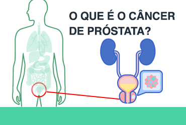

OQUE É CANCER DE PROSTATA?
Câncer de próstata é o tumor que afeta a próstata, glândula localizada abaixo da bexiga e que envolve a uretra, canal que liga a bexiga ao orifício externo do pênis. O câncer de próstata é o mais frequente entre os homens, depois do câncer de pele.

QUAIS OS SINTOMAS DO CANCER DE PROSTATA?
Na fase inicial, o câncer de próstata pode não apresentar sintomas e, quando apresenta, os mais comuns são:
dificuldade de urinar;
demora em começar e terminar de urinar;
sangue na urina;
diminuição do jato de urina;
necessidade de urinar mais vezes durante o dia ou à noite.
OQUE PODE CAUSAR O CANCER DE PROSTATA?
As causas do câncer de próstata estão relacionadas com fatores genéticos, excesso de gordura corporal e o avanço da idade. Há também fatores ambientais que podem auxiliar no aparecimento da doença, como fumo e exposição a produtos químicos.